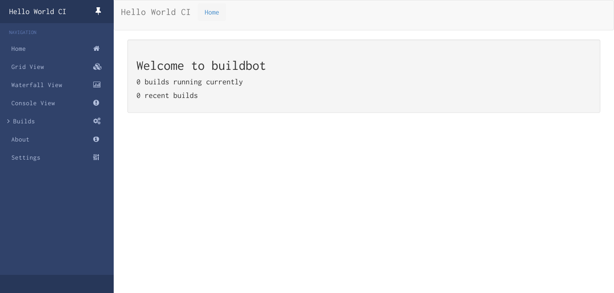
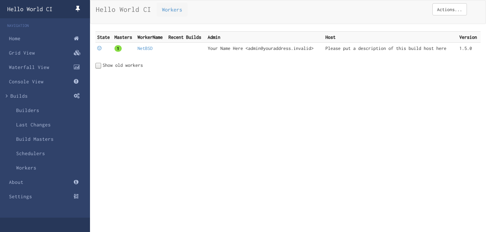
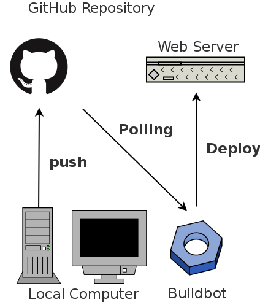
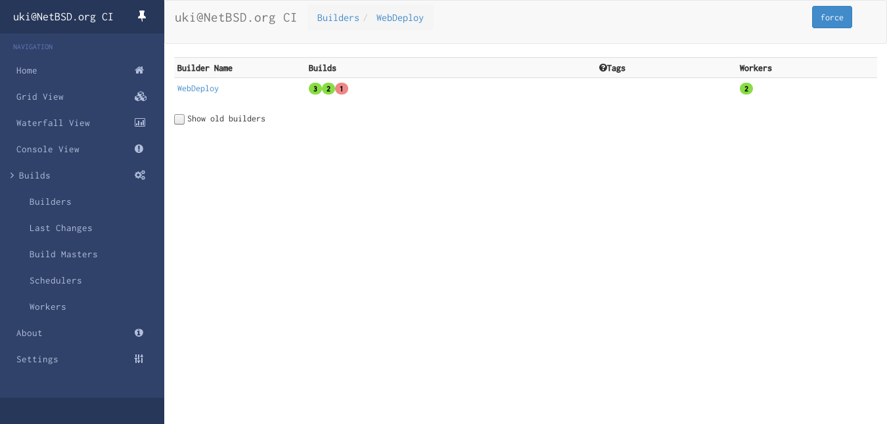

Buildbotはソフトウェアのビルド・テスト・リリース作業の自動化のためのFLOSS（GPLv2）フレームワークです。Pythonで実装されており継続的インテグレーション（Continuous Integration）を実現するためのシステムのひとつと言えます。
このシステムのアーキテクチャはMaster-Worker方式、つまりBuildbot MasterがBuildbot Workerにソースコードのチェックアウトやビルドのコマンドなどの指示を投げるかたちになっています（詳細はBuildbot Basicsを参照）。当然Woker側にBuildbotのWokerプログラムやPythonなどをインストールする必要がありますが、GNU/Linux distributionの中には標準でPythonがインストールされているものも少なくはない（特にRHEL系）のでWokerを構築するのはそこまで大変ではありません。
はじめに、システムにインストールされているPythonのバージョンとpkgsrc(7)で提供されているPythonのバージョンが一致しているか確認してください。lang/pythonXX（XXは任意のバージョン番号）をmake packageしてパッケージを作り、pkg_add -uuコマンドでアップデートすると安全です。
# cd /usr/pkgsrc/lang/python37
# make package
# pkg_add -uu /usr/pkgsrc/packages/All/python37-3.7.1.tgzpkgsrc(7)から以下のパッケージをインストールします。ここではPythonのバージョンは3.7.1とします。したがってmake(1)の実行時か/etc/mk.confにPYTHON_VERSION_DEFAULT変数を定義しておきます。
PYTHON_VERSION_DEAULT=37pkgsrc(7)ではpy-XXXというパッケージを提供しています。pkgsrc(7)からPythonのパッケージをインストールする場合pipを使うことはありません。Pythonのバージョンは変数PYTHON_VERSION_DEAULTで決定されますが、標準ではPython 2.7が使われます。パッケージは/usr/pkg/lib/pythonX.Y/site-packagesディレクトリ下にインストールされます。
BuildBotのインストールは公式文書ではpipによる手順が紹介されています。しかしここではpipではなくpkgsrc(7)を採用します。パッケージの管理インタフェースをむやみに増やしたくないからです。
しかしpkgsrc(7)のStable版から提供されるソフトウェアは、そのリリース頻度に影響してアップストリームの最新版より古い可能性があります。最新のBuildbotを使いたいのであれば、pkgsrc(7)ではなくpipを使うべきです。
本節は1.1. First Runに従います。
はじめに任意のディレクトリにmasterディレクトリを作成します。これがBuildbot Masterの親ディレクトリになります。ここでは$HOME/buildbotディレクトリを作成します。
$ mkdir -p $HOME/buildbotBuildbot Masterを作ります。
$ buildbot-3.7 create-master $HOME/buildbot/master$HOME/buildbotディレクトリにmasterディレクトリができ、さらにそのディレクトリ内にmaster.cfg.sampleファイルが生成されています。これをmaster.cfgに名前変更します。
$ mv $HOME/buildbot/master/master.cfg.sample $HOME/buildbot/master/master.cfgここで、master.cfgの中身を確認します。master.cfgはPythonスクリプトで、このスクリプトの中にWorkerのタスクやMasterの情報を書き加えます。Buildbotは標準ではなにも提供しません。すべてユーザがPythonを書いてMasterとWorkerを設定しなければなりません。
####### PROJECT IDENTITY
# the 'title' string will appear at the top of this buildbot installation's
# home pages (linked to the 'titleURL').
c['title'] = "Hello World CI"
c['titleURL'] = "https://buildbot.github.io/hello-world/"
# the 'buildbotURL' string should point to the location where the buildbot's
# internal web server is visible. This typically uses the port number set in
# the 'www' entry below, but with an externally-visible host name which the
# buildbot cannot figure out without some help.
c['buildbotURL'] = "http://localhost:8010/"
# minimalistic config to activate new web UI
c['www'] = dict(port=8010,
plugins=dict(waterfall_view={}, console_view={}, grid_view={}))master.cfgの一部を抜粋しました。この記述から、プロジェクトのタイトルは「Hello World CI」で、BuildbotのURLは「http://localhost:8010」であるとわかります。MasterのWebフロントエンドの情報を編集したければ、これらのエントリを変更すればいいわけです。
Buildbot Masterを動かします。
$ buildbot-3.7 start $HOME/buildbot/mastermaster.cfgで指定されたURLにWebブラウザからアクセスします。ここでは「localhost:8010」です。HTTPデーモンを別途動かす必要はありません。また、ブラウザ側でJavascriptを有効にしておかなければなりません。
buildbot-workerコマンドのcreate-workerを実行し、$HOME/buildbotディレクトリを親ディレクトリとしてBuildbot Workerを作成します。このコマンドの書式は次の通りです。
buildbot-worker create-worker <wokerのディレクトリ> <MasterのIPアドレス> <Wokerの名前> <Workerのパスワード>たとえば次のように実行します。
$ buildbot-worker-3.7 create-worker $HOME/buildbot/worker localhost NetBSD 'netbsd'Woker作成後、Buildbot Master側の設定ファイルmaster.cfgを編集し、作成したWorkerと同じ情報を書きます。上記のように「NetBSD」というWorkerをパスワード「netbsd」で作成したのであれば、以下のようにmaster.cfgを編集します。
--- master/master.cfg.sample 2019-03-19 08:50:16.915754634 +0900
+++ master/master.cfg 2019-03-19 10:36:09.132270759 +0900
@@ -15,7 +15,7 @@
# The 'workers' list defines the set of recognized workers. Each element is
# a Worker object, specifying a unique worker name and password. The same
# worker name and password must be configured on the worker.
-c['workers'] = [worker.Worker("example-worker", "pass")]
+c['workers'] = [worker.Worker("NetBSD", "netbsd")]
# 'protocols' contains information about protocols which master will use for
# communicating with workers. You must define at least 'port' option that workers
@@ -66,7 +66,7 @@
c['builders'] = []
c['builders'].append(
util.BuilderConfig(name="runtests",
- workernames=["example-worker"],
+ workernames=["NetBSD"],
factory=factory))
####### BUILDBOT SERVICESMasterが既に動いているのであれば、再起動します。
$ buildbot-3.7 restart $HOME/buildbot/masterWorkerを動かします。
$ buildbot-worker-3.7 start $HOME/buildbot/workerMasterのWebフロントエンドからNAVIGATION>Builds>Workersを選ぶと、先ほど作成したWorkerがMasterに登録されていることがわかります。
このページはhttps://github.com/user340/wwwリポジトリで管理されています。この例ではBuildbotを使い、リポジトリ内のコードに変更があったときに特定のコマンドをWorkerに実行させるように設定します。
次の画像はシステムのおおまかな全体像です。Buildbot Master/Worker両方が動く開発環境（Local Computer）からGitHubのリポジトリへコードをpushします。Buildbot Workerは定期的にリポジトリの変更を確認します。もし変更があれば、開発環境内のデプロイ用コマンドを実行してサーバ（Web Server）のコンテンツを更新します。
master.cfgを変更し、Workerがなにをすべきかをプログラミングしていきます。まずはWorkerが実行するデプロイ用コマンドを書きます。これはシェルスクリプトです。
#!/bin/sh
ssh USERNAME@www.servername.org "cd /path/to/html && git pull"このスクリプトをweb_deploy.shとして保存し、chmod +xコマンドを実行して実行権限を付与します。
master.cfgのchange_source設定を変更します。600秒に1回、指定したリポジトリのmasterブランチに変更がないかを確認するようにしました。
c['change_source'].append(changes.GitPoller(
'git://github.com/user340/www.git',
workdir='www',
branch='master',
project='www',
pollInterval=600))schedulers設定を変更します。ここではWeb Deployというスケジューラを作成し、wwwプロジェクトのmasterブランチに変更があったときにWebDeployビルダが実行されるようになっています。WebDeployビルダは後ほど定義します。schedulers.ForceSchedulerクラスにWebDeployビルダを指定したインスタンスをschedulersに加えることで、Buildbot MasterのWebフロントエンドからビルダを実行できるようになります。
c['schedulers'].append(schedulers.SingleBranchScheduler(
name="Web Deploy",
change_filter=util.ChangeFilter(branch='master',
project='www'),
treeStableTimer=None,
builderNames=["WebDeploy"]))
c['schedulers'].append(schedulers.ForceScheduler(
name="force",
builderNames=["WebDeploy"]))util.BuildFactoryクラスをインスタンス化し、addStep()メソッドを用いてビルド手順をひとつひとつ定義します。この例ではデプロイコマンドを実行するだけですので、1回しか使いません。
web_deploy = util.BuildFactory()
web_deploy.addStep(steps.ShellCommand(command=['/usr/local/bin/webdeploy']))ShellCommand以外のBuild Stepsについては2.5.10. Build Stepsを参照してください。
WebDeployビルダを作成します。「NetBSD」Workerが、web_deployインスタンスで定義されたビルド手順を実行するようにビルダを設定しています。
c['builders'].append(
util.BuilderConfig(name="WebDeploy",
workernames=["NetBSD"],
factory=web_deploy))Buildbot Masterを再起動し、master.cfgへの変更が反映されているかをWebフロントエンドから確認してください。NAVIGATION>Builds>Buldersに移ると、WebDeployビルダが見えます。画面右上のForceからビルダを強制的に実行できます。
